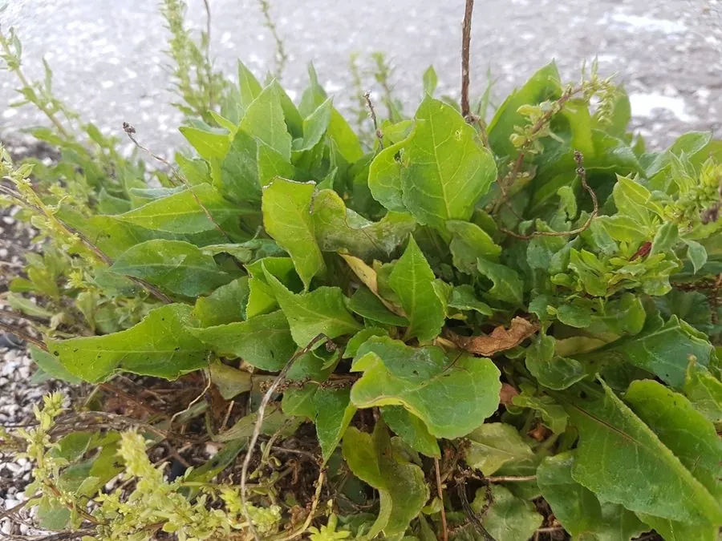

农作物与经济植物 · 植物界
甜菜 Beta vulgaris

甜菜是仅次于甘蔗的制糖原料，块根含糖量高，可提制白糖，叶可作蔬菜和饲料，是温带重要的经济作物。
- 分类
- 门被子植物门纲双子叶植物纲目石竹目科藜科属甜菜属
- 栖息环境
- 温带凉爽地区，喜凉爽湿润，耐寒耐盐碱
- 地理分布
- 原产地中海与西亚，现主产于欧洲、俄罗斯、中国东北与西北
- 保护级别
- 暂无评估（栽培作物）
物种志
甜菜是藜科二年生草本，第一年形成肥大的块根，第二年抽薹开花。叶片卵形或长圆形，叶柄长而肉质，叶面有皱褶，呈深绿色或紫红色。块根形状有圆锥形、纺锤形等，皮色有白、黄、红等，肉质白色，富含糖分。花小，绿色，圆锥花序，种子为聚花果。
甜菜原产地中海沿岸与西亚，栽培历史约 4000 年，最初作蔬菜和饲料，18 世纪欧洲培育出糖用甜菜，开始大规模制糖。它喜凉爽湿润气候，耐寒、耐盐碱，适宜在温带肥沃的壤土中种植。糖用甜菜块根含糖约 15%–20%，是制糖工业的重要原料，与甘蔗并称两大糖源；叶片和根渣可作饲料。中国东北、西北与内蒙古是甜菜主产区。叶用甜菜（牛皮菜）与根用甜菜（红甜菜）也是常见蔬菜。
形态与习性
- 块根圆锥形或纺锤形，含糖约 15%–20%
- 叶卵形，深绿色或紫红色
- 用途制糖、饲料与蔬菜
- 习性喜凉爽，耐寒耐盐碱
- 制糖地位与甘蔗并称两大糖源
- 主产区中国东北、西北与内蒙古
趣味知识
- 甜菜是仅次于甘蔗的制糖原料，18 世纪才被用来大规模制糖。
- 糖用甜菜的块根含糖可达 15%–20%，是温带地区的主要糖源。
- 红甜菜、牛皮菜等也是甜菜的栽培变种，可作蔬菜。